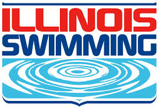

Funky Fish Swim Club
Funky Fish Swim Club
Coaches
Coach Fish has been the head men's and women's swimming and diving coach at Illinois Wesleyan since 1995. She founded the Funky Fish Swim Club in 2012. A native of Darien, Ill., and a graduate of Hinsdale South High School, Fish earned a bachelor's degree in chemistry in 1988 at Kenyon (Ohio) College, where from 1985-88 she won 14 NCAA Division III swimming titles and earned 27 swimming All-American honors as well as being named an Academic All-American. In September 2005, Fish was part of the 1986-87 Kenyon swim team that was inducted into the Kenyon Athletic Association Hall of Fame. The 1987 Kenyon women's swim team won the national Division III title, taking 15 of 18 events including all five relays. Fish earned a master's degree at Duke University and was pursuing a doctorate in biochemistry at Duke when she elected to start her coaching career at IWU. In Durham, N.C., she coached United States Swimming and YMCA age group programs and also coached the Durham Academy girls' team to a high school state championship in 1994. Teresa lives in Bloomington with her husband John and son George, who swims for FFSC.
Has earned two letters (2020-21, 2021-22) …
Conference Awards
Two-time CCIW Medalist -- 2022: 400 Medley Relay (3:54.30), 800 Free Relay (7:42.43)
Seven-time All-CCIW -- 2021*: 50 Back, 100 Back (59.42), 200 Back (2nd - 2:07.21)
2022: 400 Medley Relay (1st - 3:54.30), 800 Free Relay (7:42.43), 200 Back (2nd - 2:06.25)
2023: 200 Back (3rd - 2:06.85)
Two-time CCIW Swimmer of the Week (Feb. 9, 2021; Nov. 1, 2022)
PERSONAL: Majoring in psychology at Illinois Wesleyan ... Other interests include listening to music, cooking, photography, and napping …
Coaches
2022-23: Holds the season top-times in the 1650 free (18:09.57), and as part of the 800 free relay (7:54.50) … Posted season-best times of 1:59.46 in the 200 free, 5:18.79 in the 500 free, 11:13.32 in the 1000 free, 18:09.57 in the 1650 free, 1:43.63 as part of the 200 free relay, 3:43.32 as part of the 400 free relay, 7:54.50 as part of the 800 free relay, and 4:04.52 as part of the 400 medley relay … 2021-22: Posted season-best times of 26.85 in the 50 yard freestyle, 58.83 in the 100 yard freestyle, 2:00.88 in the 200 yard freestyle, 5:23.24 in the 500 yard freestyle, 11:15.28 in the 1000 yard freestyle, 18:24.46 in the one-mile, 2:37.95 in the 200 yard backstroke, 1:17.64 in the 100 yard breaststroke, 2:48.62 in the 200 yard breaststroke, 1:41.22 part of a 200 yard freestyle relay, 3:39.95 part of a 400 yard freestyle relay, 8:00.06 part of a 800 yard freestyle relay, and 2:07.52 part of a 200 yard medley relay PERSONAL: Majoring in elementary education at Illinois Wesleyan … Aunts Paula Starkey, Sheila Kaurin, Brenda Seibert, and Tina Swingler and Uncles Dana Stareky and Matt Swingler who played on the men’s basketball team, all attended Illinois Wesleyan University … Cousin, Garret Swingler, attends IWU and was a two-year member of the baseball team… Other interests include hanging out with friends and family, listening to music, watching movies, and drawing
A 2012 Illinois Wesleyan graduate, Tommy Gilbert became a full-time assistant swimming coach at Illinois Wesleyan in August 2016 after serving two seasons as a graduate assistant (2013-15) and one year as a part-time assistant coach (2015-16). As a Titan swimmer he earned four letters from 2009 to 2012 and was a multiple-time all-College Conference of Illinois and Wisconsin performer, including in the 100 breaststroke as a senior. He also earned College Conference of Illinois and Wisconsin Men's "Swimmer of the Week" honors once in the 2009-10 season. A native of Northbrook, Illinois and graduate of Glenbrook North High School, Gilbert has a master's degree in sport management from Illinois State University after graduating with degrees in history and secondary education at Illinois Wesleyan University. He was also active with the campus radio station (WESN-FM) as a sports broadcaster during his college career.
